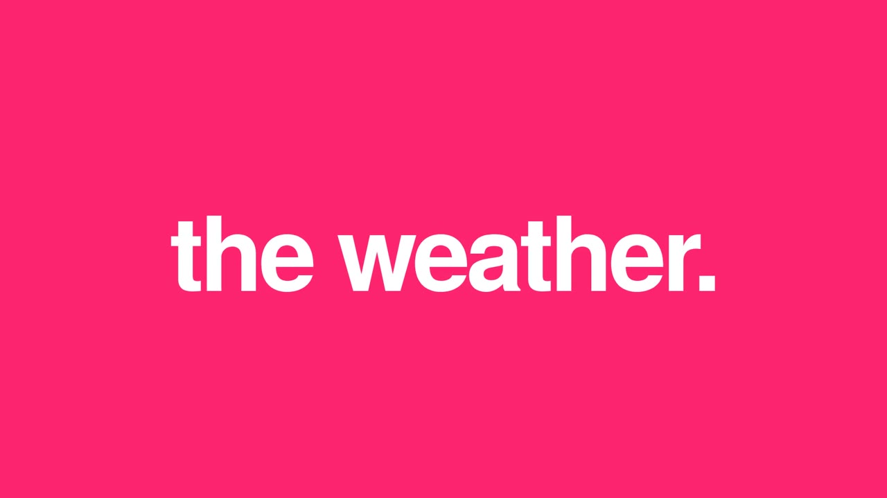
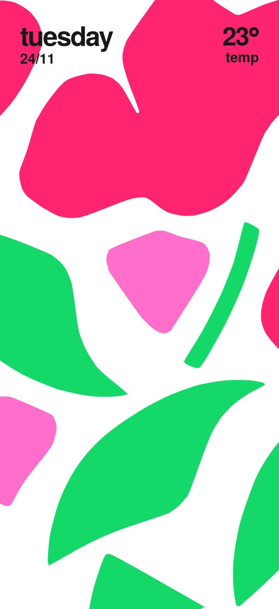
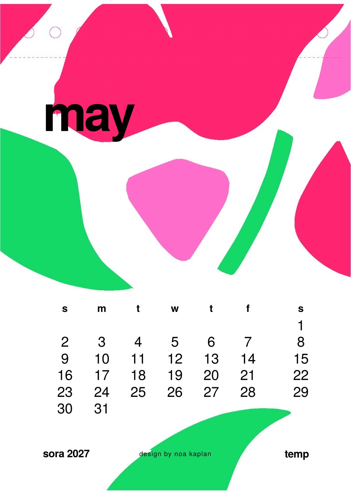
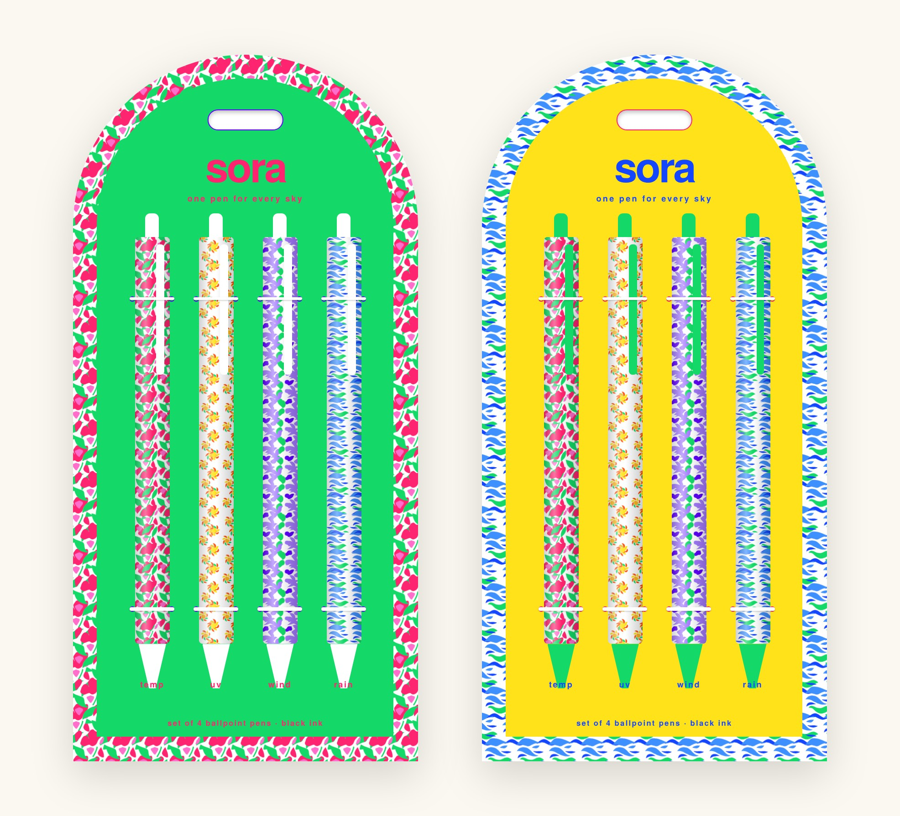
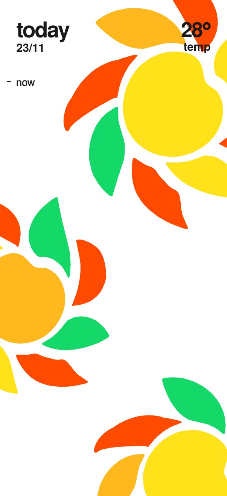
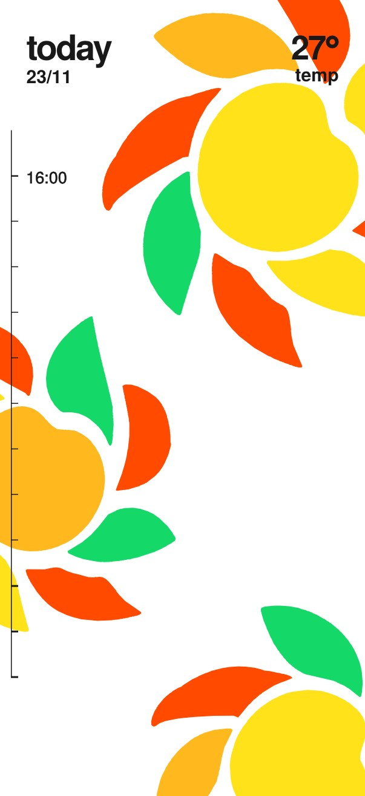
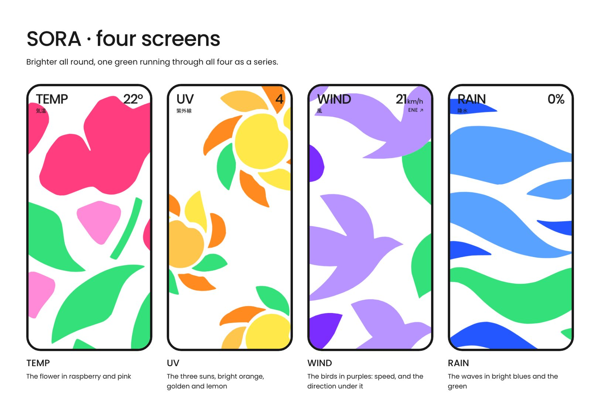
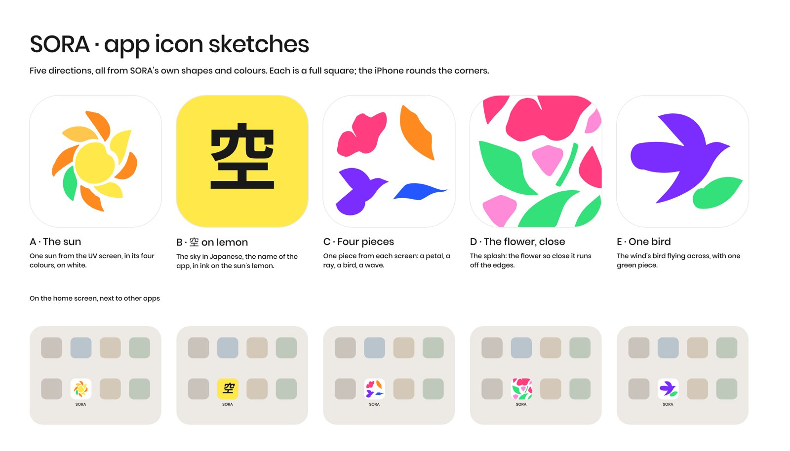

A weather app · coming spring 2027
The sky in one shape
SORA shows the weather one piece at a time: one shape, one word, one number.
SORA shows the weather one piece at a time: one shape, one word, one number.
Most weather apps show everything at once. SORA picks one shape from nature for the day and lets you read it from across the room.

 Tap
TapChange the reading: TEMP, UV, WIND, RAIN.
 Drag
DragPull NOW through the next 10 hours.
 Swipe
SwipeSee the next 7 days, each with its shape.
 Night
NightAfter sunset the app turns to night by itself.
Open it in the morning. One look, and you know how the day will feel.
The pieces fly in and land: TODAY, NOW and the temperature.
Suns, flower, birds or waves: the day's high picks it.
UV, wind and rain, one at a time. The shape stays.
Drag through today's hours, swipe through the week.




Print, paper and small things to keep. Each one carries a shape and leads back to the app.




A weather app that shows one piece of the weather at a time, as one shape from nature, one word and one number.
Real numbers for Tel Aviv, updated through the day.
After the cut-paper work of Zenji Funabashi: flat colour, nature as a sign. More about him.
Spring 2027, on the App Store and Google Play.
Yes: tap “Open the app” at the top, or try it right here in “How it works”.
The app beside this book is the real one: change a colour, or day and night, and it follows at once.
IdeaOne shape: the flower, suns, birds or wavesZenji Funabashi (1942–2023) cut flat shapes out of paper in bright, happy colours and turned nature into signs. SORA takes four things from him: the flatness of cut paper, a few bright colours with one green, nature as a sign, and paper pieces that move. More about him →
ColourTypographywhat you read
The day, the number, the word, titleswhat you do
The time handle, body text, captionsabcdefghijklmnopqrstuvwxyz
0123456789 ° % / · → km/h
abcdefghijklmnopqrstuvwxyz 0123456789
Sizes are a share of the screen's width (cqw), so the header looks the same on every phone. Pixels below are for a 390 px phone.
type.large9.6% · 37 pxbold · −0.045em · 1today, the number (9.1%)type.small5% · 19.5 pxbold · 0 · 123/11, temp, uv, wind, raintype.hand4.5% · 17.5 pxregular · 0 · 1now, 16:00ShapesFlat, like cut paper: no gradients, no shadows, no outlines. Each shape fills the whole screen, and tapping or dragging never changes it.
ComponentsMotion & states| GESTURE | WHAT CHANGES | IN THE CODE |
|---|---|---|
| Open | The pieces land | 1.3 s per piece, 170 ms apart |
| Tap | The reading | 0.45 s rise of 8 px and fade |
| Drag now | The hour, ahead | snaps to the nearest tick |
| Swipe | The day, 7 ahead | never back before today |
| Sunset | Day to night | 0.7 s colour fade |



Offline, the app shows the last numbers saved. Day 7 is the last day; going back stops at today.
Sketches



